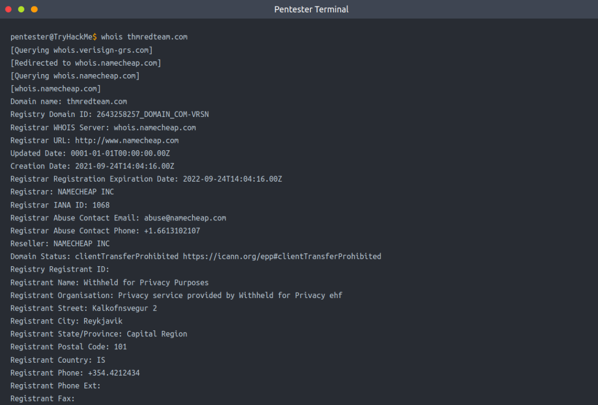
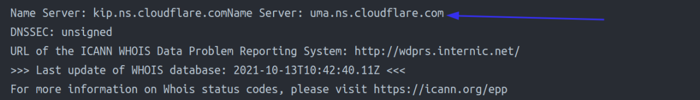
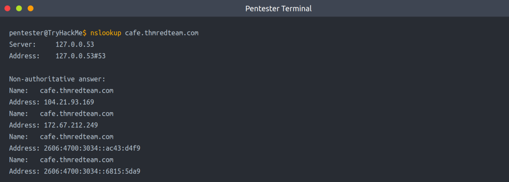
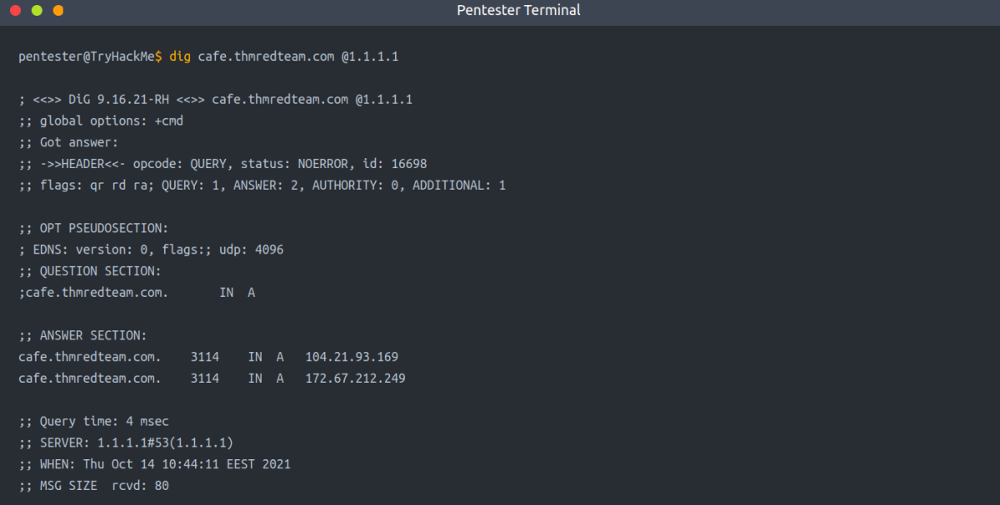
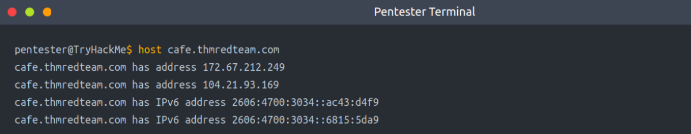
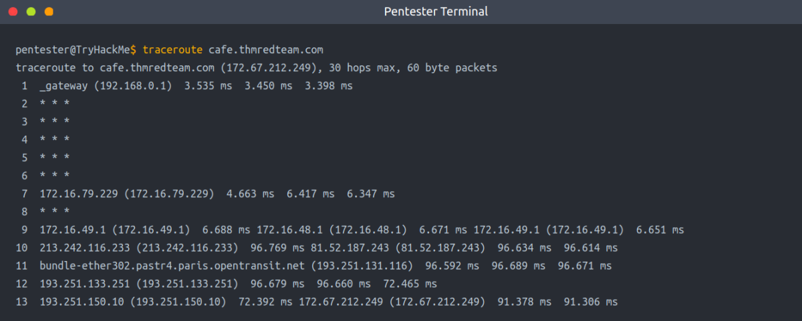

Built-in Tools
This task focuses on:
• whois
• dig, nslookup, host
• traceroute/tracert
Whois
Before we start using the whois tool, let's look at WHOIS. WHOIS is a request and response protocol that follows the RFC 3912 specification. A WHOIS server listens on TCP port 43 for incoming requests. The domain registrar is responsible for maintaining the WHOIS records for the domain names it is leasing. whois will query the WHOIS server to provide all saved records. In the following example, we can see whois provides us with:
• Registrar WHOIS server
• Registrar URL
• Record creation date
• Record update date
• Registrant contact info and address (unless withheld for privacy)
• Admin contact info and address (unless withheld for privacy)
• Tech contact info and address (unless withheld for privacy)

As we can see above, it is possible to gain a lot of valuable information with only a domain name. After a whois lookup, we might get lucky and find names, email addresses, postal addresses, and phone numbers, in addition to other technical information. At the end of the whois query, we find the authoritative name servers for the domain in question. [See the image below]

nslookup
DNS queries can be executed with many different tools found on our systems, especially Unix-like systems. One common tool found on Unix-like systems, Windows, and macOS is nslookup. In the following query, we can see how nslookup uses the default DNS server to get the A and AAAA records related to our domain.

dig
Another tool commonly found on Unix-like systems is dig, short for Domain Information Groper (dig). dig provides a lot of query options and even allows you to specify a different DNS server to use. For example, we can use Cloudflare's DNS server: dig @1.1.1.1 tryhackme.com.

host
host is another useful alternative for querying DNS servers for DNS records. Consider the following example.

traceroute/tracert
The final tool that ships with Unix-like systems is traceroute, or on MS Windows systems, tracert. As the name indicates, it traces the route taken by the packets from our system to the target host. The console output below shows that traceroute provided us with the routers (hops) connecting us to the target system. It's worth stressing that some routers don’t respond to the packets sent by traceroute, and as a result, we don’t see their IP addresses; a * is used to indicate such a case.

Summary:
In summary, we can always rely on:
• whois to query the WHOIS database
• nslookup, dig, or host to query DNS servers
WHOIS databases and DNS servers hold publicly available information, and querying either does not generate any suspicious traffic.
Moreover, we can rely on Traceroute (traceroute on Linux and macOS systems and tracert on MS Windows systems) to discover the hops between our system and the target host.